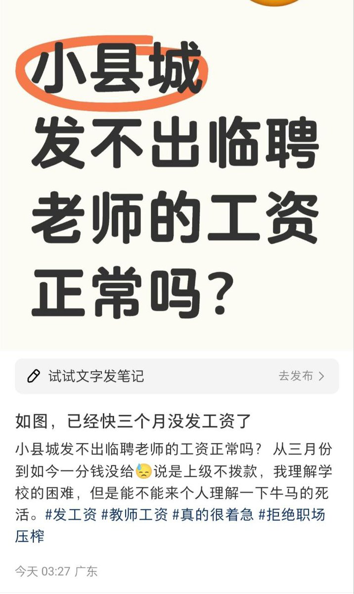
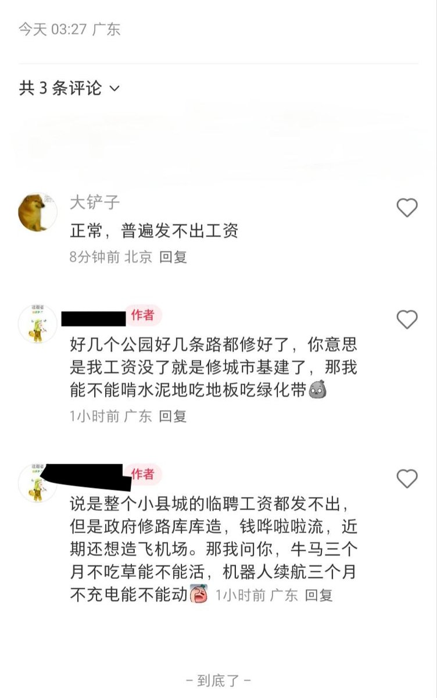

小虚空🍥
@tokerumaisurii
@whyyoutouzhele 你已经快三个月没拿工资了也还愿意乖乖上班，不敢罢工也不敢辞职，那你说他们会觉得牛马三个月不吃草能活还是不能活，机器人续航三个月不充电能动还是不能动。


李老师不是你老师
@whyyoutouzhele
5月24日 博主吐槽，广东小县城临聘教师欠发工资，从三月份到现在一分没发，博主表示公园的路和基建都修好了，我的工资没了是拿去修公园的路和基建了吗？
“政府近期还想造飞机场，那我问你，牛马三个月不吃草能不能活？机器人续航三个月不充电能不能动？” https://t.co/ciYbpV6XgV